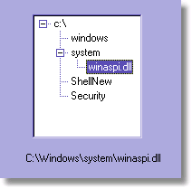

DRKB Explorer
Как получить строковый путь узла TTreeView?
01.01.2010

{*---------------------------------------------
Parent Text
---------------------------------------------*}
function SrNodeTree(pTreeNode: TTreeNode; var sRuta: string): string;
begin
sRuta := pTreeNode.Text + ' > ' + sRuta;
if pTreeNode.Level = 0 then Result := sRuta
else
Result := SrNodeTree(pTreeNode.Parent, sRuta);
end;
{*---------------------------------------------
Click an Item
---------------------------------------------*}
procedure TForm1.TreeView1Click(Sender: TObject);
var
sPath: string;
begin
label1.Caption := SrNodeTree(TreeView1.Selected, sPath);
end;
Взято с сайта http://www.swissdelphicenter.ch/en/tipsindex.php
{ **** UBPFD *********** by delphibase.endimus.com ****
>> Получение пути заголовков к узлу в TreeView
Функция выдает путь к указанному узлу (к ноде) в TreeView
в виде строки заголовков узлов, разделенных символом Separator.
Зависимости: ComCtrls
Автор: lipskiy, lipskiy@mail.ru, ICQ:51219290, Санкт-Петербург
Copyright: Собственное написание (lipskiy)
Дата: 02 мая 2002 г.
***************************************************** }
function GetPathToNode(Node: TTreeNode; Separator: Char): string;
begin
Result := '';
if Node = nil then
exit;
while Node <> nil do
begin
Result := Node.Text + Separator + Result;
Node := Node.Parent;
end;
Delete(Result, length(Result), 1);
end;